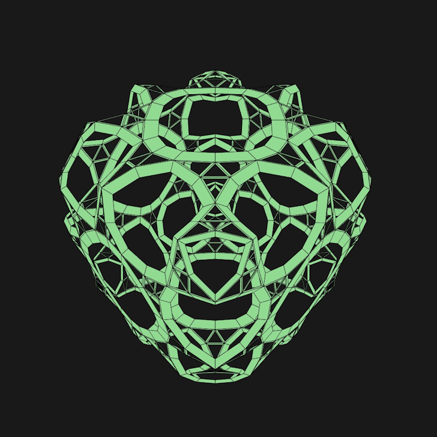

Projekte und Prototypen

Spielerische Erkundung komplexer Polyeder
Entdecke, wie einfache geometrische Transformationen faszinierende neue Formen erschaffen. Der Conway Explorer kombiniert Dual-, Ambo- und Kis-Operatoren zu überraschenden 3D-Strukturen.
Über mich
Interdisziplinärer Entwickler und Kreativtechniker
Kontakt
E-Mail: h.s.dietz@web.de